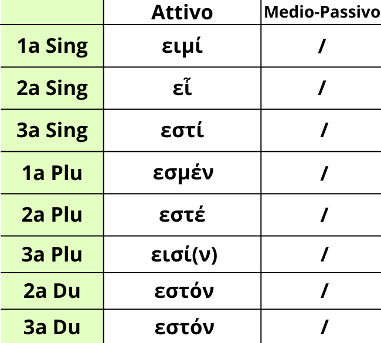

Il verbo ειμί è il corrispettivo del verbo Essere, quindi svolge varie funzioni come la possibilità di essere predicato nominale, detto copulativo, e verbale.
Il verbo ειμί fa parte di un gruppo di verbi apparte, non facente quindi parte della coniugazione tematica. Ciò lo puoi notare dalle desinenze dell'immagine sopra. Esso infatti fa parte della coniugazione Atematica, che differisce da quella tematica per vari motivi legati alla fonetica, le desinenze, le radici proto-indoeuropee,...
Come puoi vedere dall'immagine esso, come in italiano e in latino, non ha la diatesi medio-passiva soprattutto poiché è un verbo di stato, che esprime quindi l'animo.
Fai però attenzione alla seconda persona singolare. Infatti essa è un'enclitica, cioè una parola che si attacca a quella precedente, che nella maggior parte dei casi possiede l'accento dell'insieme.
Per ora l'importante è imparare queste desinenze, senza preoccuparti della coniugazione Atematica: a quella ci arriveremo con calma.